A full platform rebuild — section by section — replacing a legacy codebase with a modern Vue/TypeScript front-end and a new unified design system. Every page redesigned for clarity, speed, and usability as part of the conversion.
The Problem
Goals
How We Worked
Before rebuilding anything, I reviewed the existing page — its workflows, data, edge cases, and known pain points. I led discussions with stakeholders and developers to surface usability gaps and improvement opportunities.
Each section was redesigned to reflect the new design standards: consistent layout grids, typography, color, and component patterns. AI was used to accelerate planning — generating component specs, layout structures, and interaction logic to review and refine.
I developed the Vue/TypeScript front-end, using AI to write, debug, and refine code. Each completed section was validated against usability standards and stakeholder expectations before moving on to the next.
Key Design Decisions
The legacy platform had no unified design language — styles varied by page and by age. I created the design system from the ground up: a clean, modern aesthetic with consistent color, typography, spacing, and component patterns that I continue to evolve with each new section.
The new system emphasizes clarity and hierarchy — making it immediately obvious what's data, what's an action, and what requires attention. Every screen in the modernized platform reflects this shared foundation.
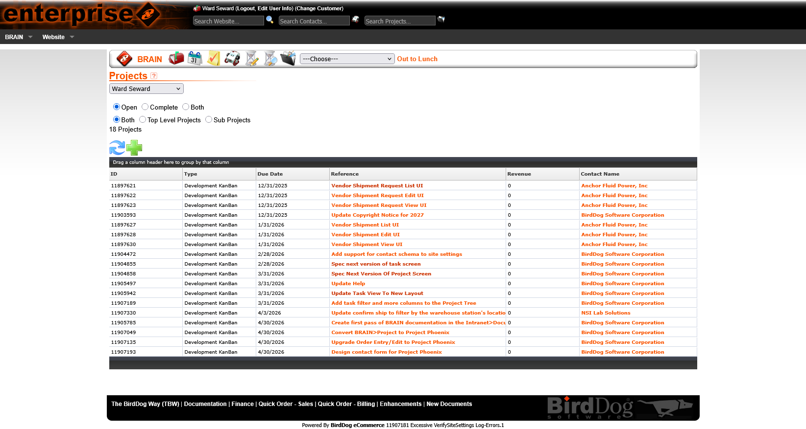
List pages are the most frequently visited — users scan them dozens of times per day. The legacy list views had dense, visually cluttered layouts with inconsistent column sizing and no clear hierarchy between primary and secondary information.
The redesigned list views establish a clear structure: consistent column headers, readable row density, status indicators that use color purposefully, and standardized filter/search controls shared across all list pages.
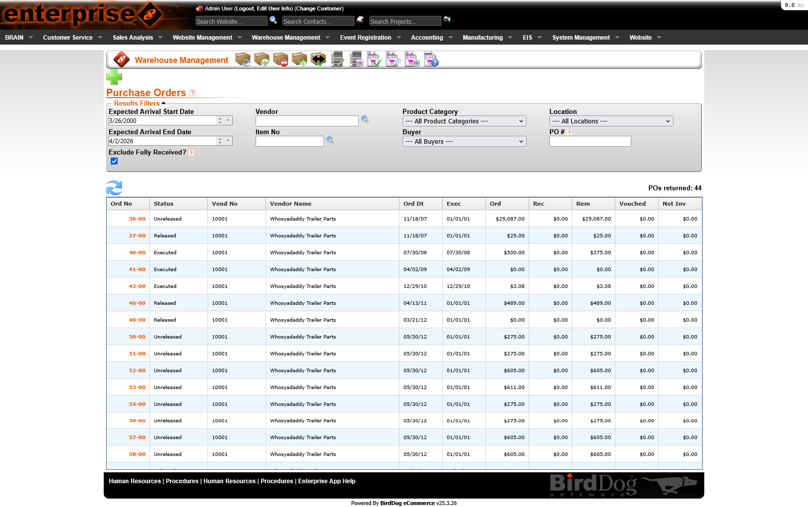
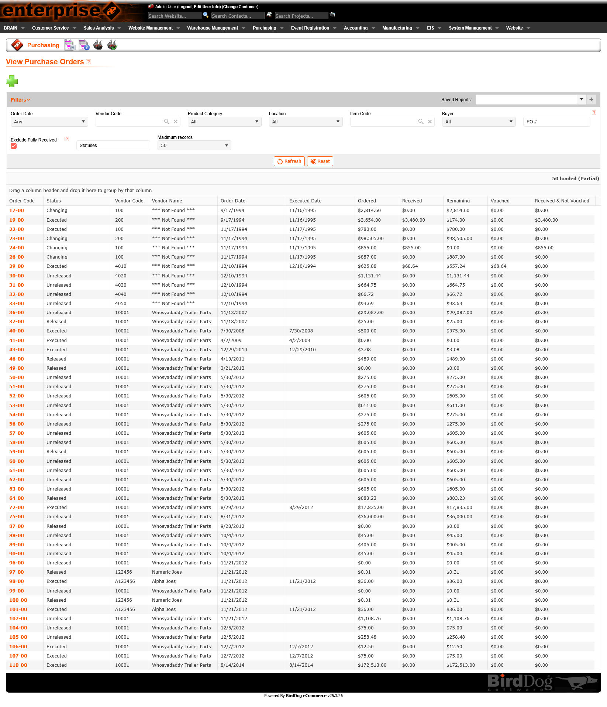
Legacy detail pages crammed all information onto a single scrolling page — making it difficult to find specific data and easy to miss critical sections. For complex records like purchase orders and shipments, this created cognitive overload.
The redesigned detail views introduce organized tab navigation — grouping related information logically and keeping each tab focused. Users can jump directly to the section they need without scanning the entire record. The active tab state and consistent tab patterns across the platform reduce re-learning.
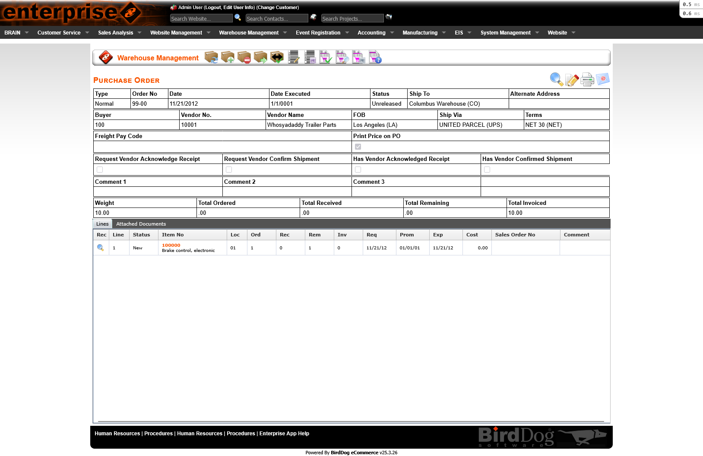
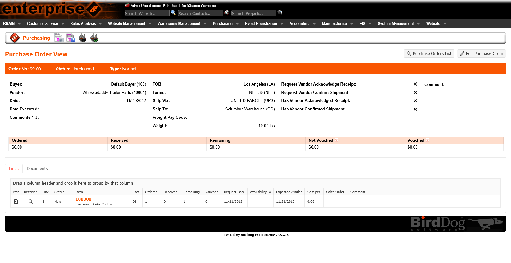
Order entry and edit forms are high-stakes — mistakes have real downstream cost. The legacy forms mixed input fields with display data, used inconsistent labels, and offered little guidance on field requirements or valid values.
The redesigned form patterns introduce clear field grouping, consistent label placement, inline validation feedback, and contextual helper text where needed. The result is a form that feels like a guided workflow rather than a data dump.
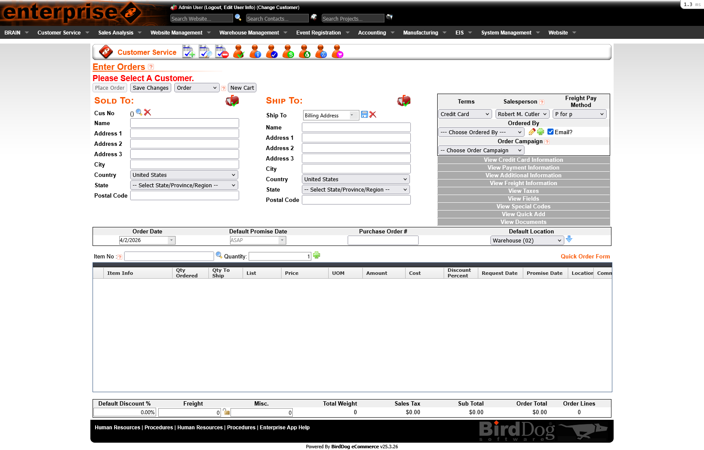
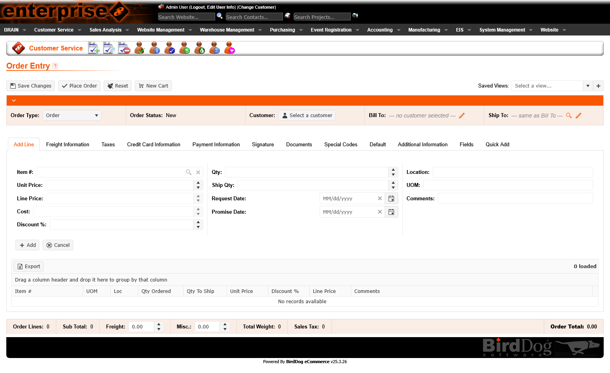
Processes like confirming and shipping orders involve multiple sequential steps with distinct data at each stage. The legacy interface presented all steps at once or used ambiguous navigation that left users unsure of where they were in the process.
The platform rebuild introduced a clear tabbed step structure — each step surfacing only the relevant data and actions, with clear progress indicators. Users know exactly where they are, what they've completed, and what's next.
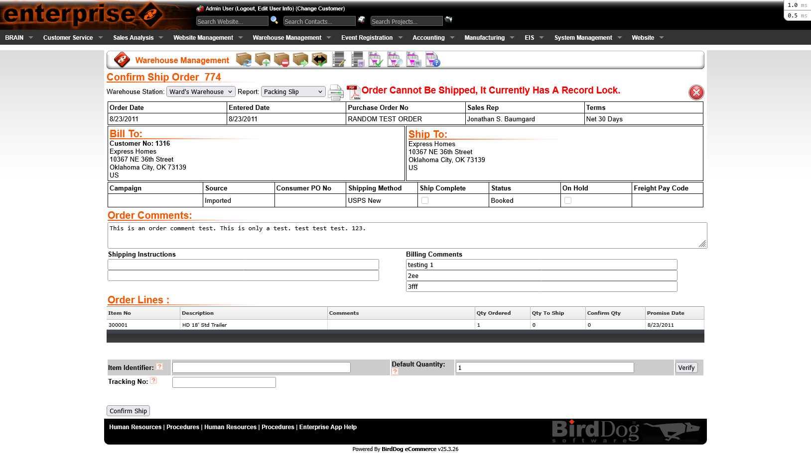

More From the Rebuild
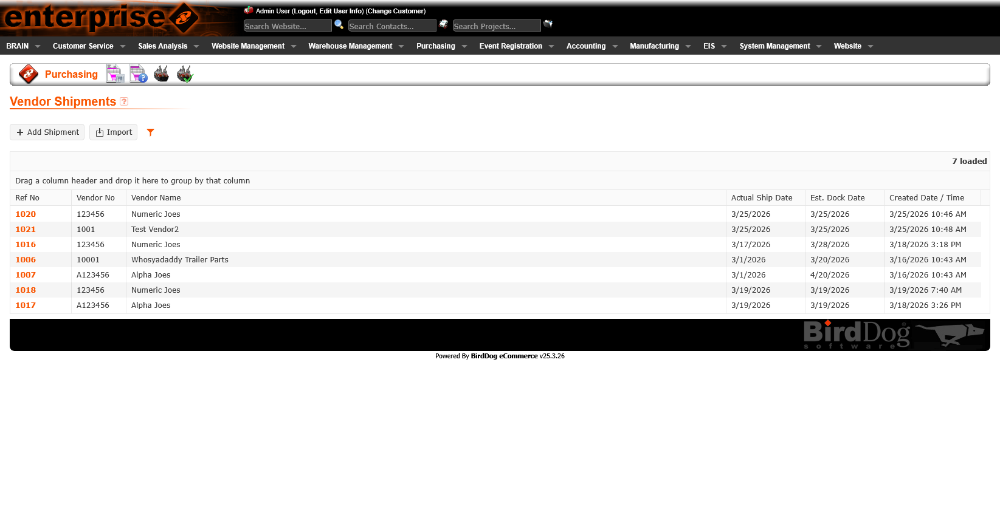
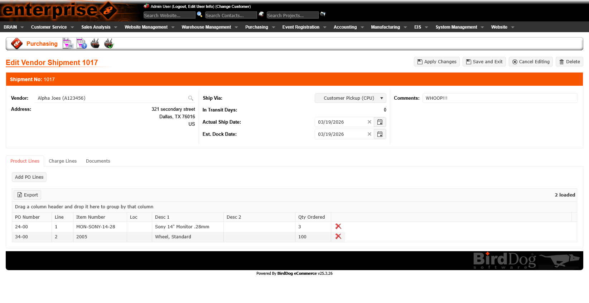
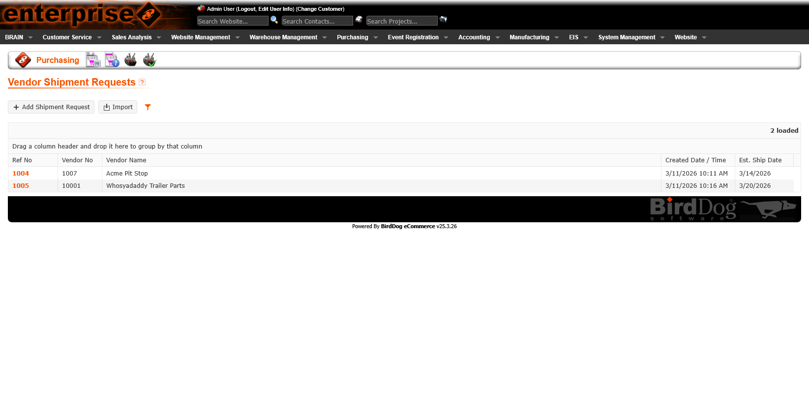
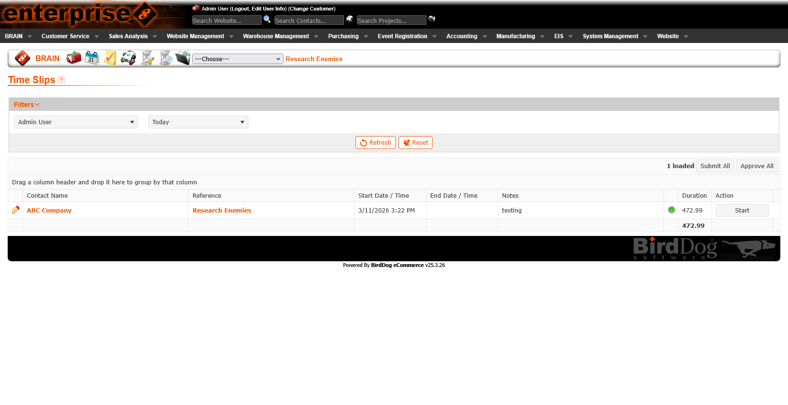
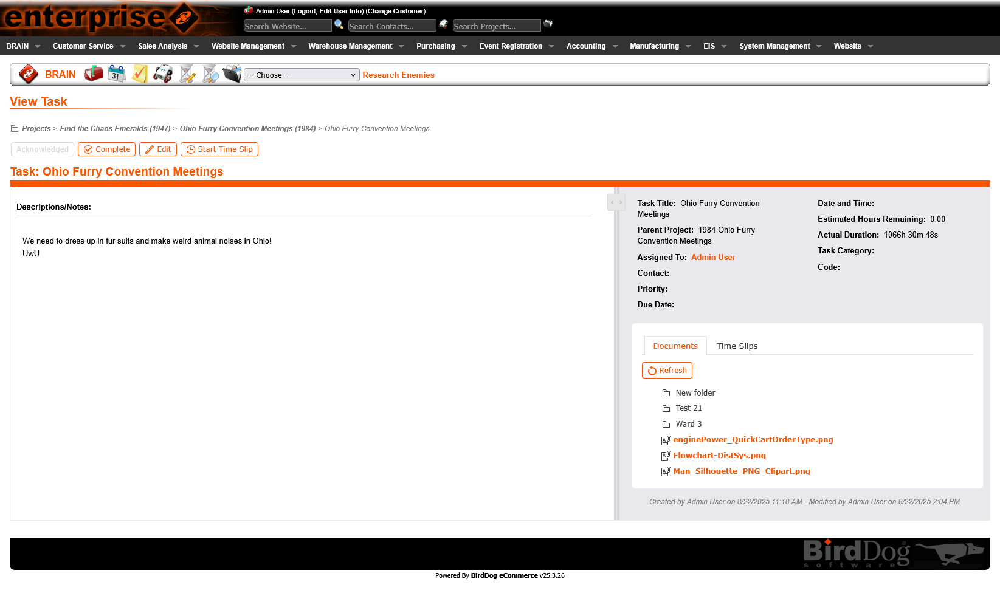
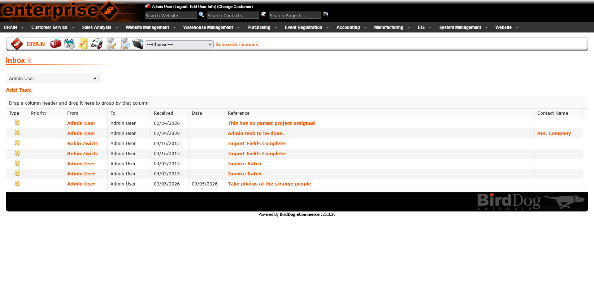
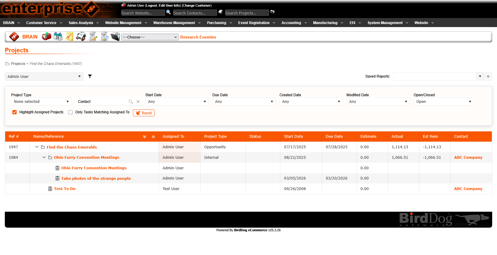
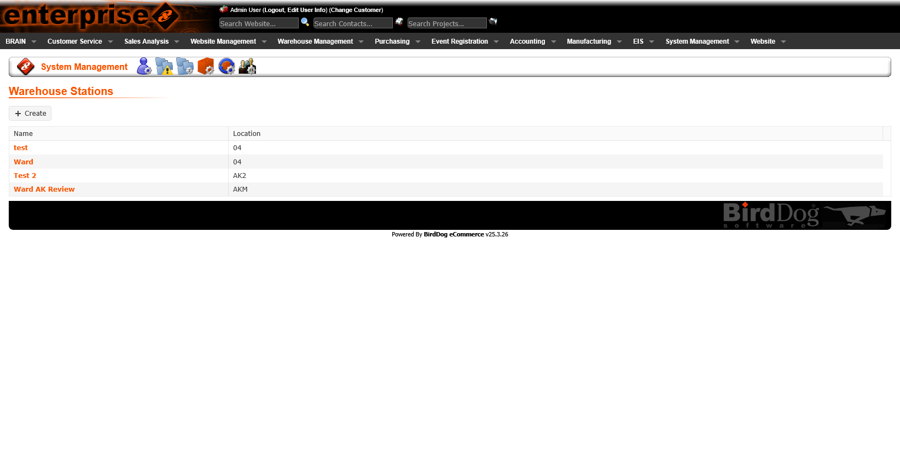
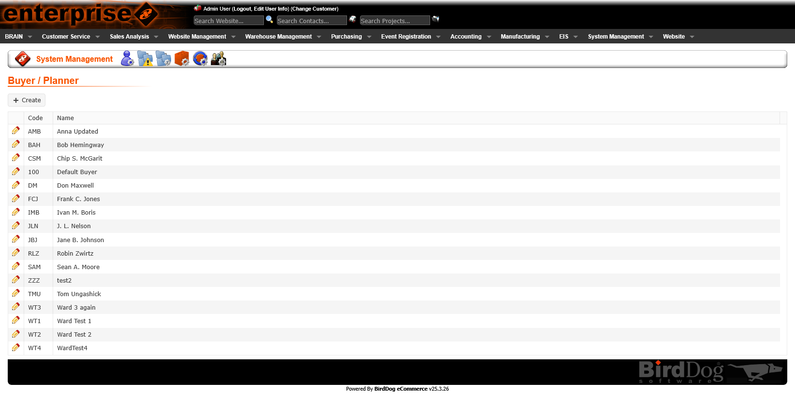
Impact
Legacy code replaced with a maintainable, performant Vue/TypeScript front-end. Each rebuilt section is cleaner, faster, and easier to extend — building a foundation for long-term product health.
Created and continue to evolve a unified design system — covering components, patterns, color, and typography that brings consistency across an entire enterprise platform for the first time.
The conversion wasn't just a technical rewrite. Every section gained usability improvements — better list views, tabbed detail views, improved forms, and new workflows that reduce friction and errors in daily operations.